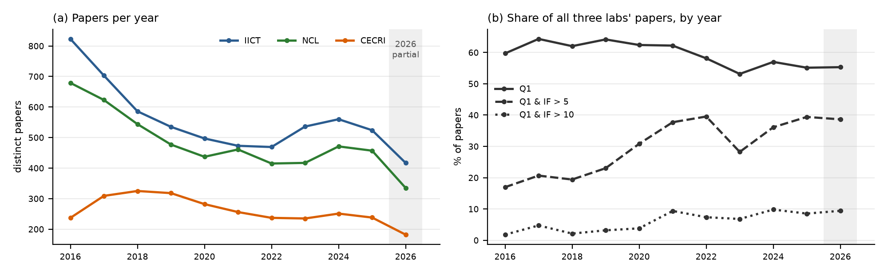
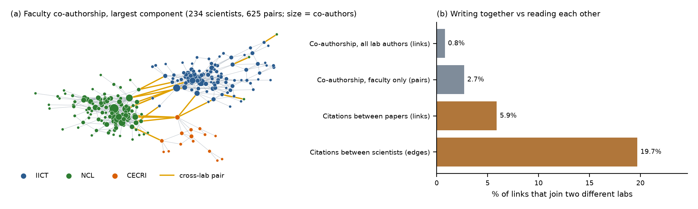

Table 1. Papers 2016–2026 (distinct; a paper shared by two labs counts for each lab and once in "All three"). Percentages are of all papers. IF = SCImago "Cites/Doc (2 years)" of the journal in its quartile year — a Scopus-based analogue of the impact factor, not Clarivate's JIF (IF known for 94.2% of papers). Partner institutions: all OpenAlex institutions on the papers other than the three labs.
| Lab | Active faculty | Papers | Q1 | Q1 & IF > 5 | Q1 & IF > 10 | < 10 authors | ≥ 10 authors | ≥ 30 authors | Mean authors | Partner inst. (Indian / foreign) | Coun- tries | Intl. papers |
|---|---|---|---|---|---|---|---|---|---|---|---|---|
| IICT | 129 | 6,123 | 3,138 (51.2%) | 1,442 (23.6%) | 229 (3.7%) | 5,743 (93.8%) | 380 (6.2%) | 9 | 5.53 | 1,724 (594 / 1,130) | 74 | 22.1% |
| NCL | 151 | 5,316 | 3,414 (64.2%) | 1,556 (29.3%) | 387 (7.3%) | 4,970 (93.5%) | 346 (6.5%) | 9 | 5.16 | 1,564 (571 / 993) | 76 | 18.2% |
| CECRI | 26 | 2,870 | 2,010 (70.0%) | 1,143 (39.8%) | 206 (7.2%) | 2,735 (95.3%) | 135 (4.7%) | 4 | 5.20 | 1,040 (376 / 664) | 69 | 30.4% |
| All three | 306 | 14,208 | 8,487 (59.7%) | 4,098 (28.8%) | 815 (5.7%) | 13,364 (94.1%) | 844 (5.9%) | 17 | 5.29 | 3,027 (933 / 2,094) | 95 | 22.3% |

Figure 1. (a) Distinct papers per year per lab. (b) Q1, Q1 & IF > 5 and Q1 & IF > 10 papers as a share of all papers of the three labs. 2026 (shaded) runs to 13 Oct. Source: publication_trend.csv, phase2_overview_by_year.csv.
Table 2. Output, journal quality, citations and faculty h-index. Growth = CAGR 2016–2025 (2026 excluded). Citations: OpenAlex counts on 13 Oct 2026, not field-normalised. World top-10% share: OpenAlex citation-normalised percentile, papers in the benchmark's subject scope (Global Benchmark); the world value in the same subjects is 10.83%. h-index: in-corpus (2016–2026 papers at the lab), roster scientists with ≥ 1 paper.
| Lab | Papers 2016 | Papers 2025 | Growth /yr | Q1 of ranked journal papers | Quartile coverage | Citations | Mean / median | Uncited | World top-10% share (field-norm.) | h-index (2016–26) mean / median / max |
|---|---|---|---|---|---|---|---|---|---|---|
| IICT | 823 | 524 | -4.9% | 55.0% | 94.4% | 125,172 | 20.4 / 10 | 11.9% | 8.9% | 8.6 / 7 / 54 |
| NCL | 679 | 457 | -4.3% | 67.3% | 96.3% | 133,859 | 25.2 / 11 | 10.6% | 12.3% | 10.1 / 8 / 43 |
| CECRI | 237 | 238 | +0.1% | 73.1% | 97.6% | 93,099 | 32.4 / 17 | 6.5% | 17.3% | 14.0 / 6 / 59 |
| All three | 1,727 | 1,208 | -3.9% | 63.2% | 95.7% | 350,015 | 24.6 / 11 | 10.3% | — | 9.8 / 7 / 59 |
Table 3. The four networks. Citation network: links between two corpus papers (citation_network.csv restricted to the corpus). Co-authorship: every lab author (students and project staff included) or roster faculty only (one node per scientist). Cross-lab = share of links joining two different labs. Papers with > 30 authors are not dropped here.
| Network (2016–2026) | Nodes | Edges | Mean degree | Density | Largest component | Communities (modularity) | Cross-lab |
|---|---|---|---|---|---|---|---|
| Citation: paper → paper, both in corpus (directed) | 10,931 | 27,099 | in 1.91 (max 129) | — | 8,917 (weak) | — | 5.9% |
| Co-authorship: all lab authors (undirected) | 7,820 | 35,014 | 8.95 | 0.0011 | 95.8% | 136 (0.82) | 0.8% |
| Co-authorship: roster faculty only | 306 | 627 | 4.10 | 0.0134 | 234 scientists | 12 (0.69) | 2.7% |
| Citation: scientist → scientist (directed) | 247 | 1,739 | — | 0.0186 | reciprocity 0.51 | — | 19.7% |

Figure 2. (a) Faculty co-authorship network, largest connected component; colour = lab, amber = a pair from two labs. (b) Share of links that cross labs in each network.
Against similar institutes, the labs' median growth (-4.5%/yr) is the lowest of all groups: Indian peers +2.9%, Chinese twins +7.2%, US twins +1.6%, Australian twins -3.1% (median per group; CSIRO Manufacturing's -8.1% is likely an attribution artefact). On impact the labs' median top-10% share (12.3%) equals the Indian peers' (12.3%) but is about half of the Chinese (27.2%) and US (24.3%) twins. CECRI (17.3%) is the exception.
Table 4. The eleven insight studies, numbered by study id; 11, "How Ideas Spread", is the lead study with its own page. Answers are each study's own generated headline (stats/tables/insights/*.json), re-run on 21 Nov 2026 on the audited data except 07, 09 and 10 (their OpenAlex caches are not in this checkout). 07 and 10 are as the website showed them before their removal on 10 Nov 2026 (D-37), computed on 2 Nov 2026, before the data audit (stats/tables/insights/withdrawn/).
| # | Question | Answer (measured) | What it means |
|---|---|---|---|
| 01 | Do researchers' co-authors have more co-authors than they do? | 93.4% of researchers have fewer co-authors than their co-authors do. The average researcher has 9.0 co-authors, but the average co-author has 32.1. | The network is built around hubs: a student or postdoc links to the cluster through a few heavily connected group leaders. Only 43% of faculty are in the paradox, because faculty are the hubs. |
| 02 | Do the most-connected scientists collaborate mainly with each other? | The top 1% most-connected researchers show no rich-club effect and are less interconnected than chance (ρ_norm = 0.73). 47 of 81 are CSIR faculty. | No. The best-connected people each lead their own group and seldom write together: there is no elite core, which matches the separate lab communities in Section 3. |
| 03 | How many researchers hold the cluster together? | Removing the top 886 bridge researchers (11.5% of the network) halves the cluster; random removal needs 3,325. Removing 675 of them separates the three labs' faculty into different components. | Robust to random loss, fragile to the loss of bridges. The top bridges are the crystallographers and Subrata Kundu (Section 3). |
| 04 | Is output concentrated in a few scientists? | √N = 18 scientists produce 36.9% of the cluster's papers (Price's law predicts 50%). The top 10% produce 49.1%; Gini = 0.61 (papers), 0.73 (citations). | Shares are of the 7,494 papers with a roster scientist, not of all papers. Concentrated, though less than Price's law predicts; citations are more unequal than papers: a few groups collect most of the impact. |
| 05 | Is a Q1 journal a reliable signal of a highly cited paper? | Q1 is a strong filter but not a guarantee: 88.7% of the cluster's top-10% most-cited papers appeared in Q1 journals, yet only 14.0% of Q1 papers reach the top 10% (vs 3.5% of Q2–Q3 papers). | Q1 is close to necessary but far from sufficient: most Q1 papers are not highly cited. Q1 shares (Table 1) measure where labs publish, not how much their papers are used. 'Top 10%' here is within the cluster and publication year (2016–2023 papers). |
| 06 | Are the papers most influential inside the cluster the world's most cited? | In-cluster influence and global citations correlate only moderately (Spearman ρ = 0.40). 45 papers are 'hidden gems': top-5% internal influence, below-median global citations. | Only partly. Some papers matter more to the labs' own later work than their global citation count shows. |
| 07 | Which papers were ignored for years and then suddenly took off? | 2 of the 7 strongest candidates (top 1% of 601 papers by Ke's B) show sustained delayed recognition; 3 are short citation spikes and 2 peaked in 2025, too recent to tell. The highest-B sustained case, ranked 4 of 7 by B, 'Funnel shaped molecules containing benzo/pyrido[1,2,5]thiadiazole f…' (IICT, 2016), drew 1.4 citations/yr for 5 years, then 4.7/yr from 2021. | Delayed recognition is rare: most late risers are short spikes. A 10-year window can only show short sleeps. |
| 08 | How much output did COVID cost, and did research shift? | Output fell 8.6% from 2019 to 2020 (1,320 → 1,207 papers) and was 10.2% below 2019 in 2021, but it had already been falling 8.6% a year since 2016: against that trend 2020 was 2.2% above and 2021 13.9% above, so there is no COVID-specific dip. COVID-related work peaked at 5.5% of CSIR-IICT's papers in 2021; the topic mix shifted about as much as in a normal period (JSD ratio 1.04). | COVID did not cause the decline: output was already falling, and 2020–21 were above the pre-pandemic trend. |
| 09 | How many scientists trained in India, worked abroad and came back, and did it change their research? | 17.0% of classifiable CSIR scientists are returnees (NCL 17.7% (n=141), IICT 17.0% (n=106), CECRI 11.1% (n=18)); their abroad spell was most often in the US (25 of 45). Their papers' citations do not differ significantly from home-grown peers of similar career age (+9%, 95% CI -19% to +47%); 20.5% of returnees' papers vs 16.7% of home-grown scientists' papers have a foreign co-author. | About one in six are returnees, mostly from the US. Their citations are not measurably different; they co-author slightly more with foreign partners. Computed on 2 Nov 2026 from the OpenAlex career cache (not in this checkout); the classification is marked 'validation pending' in its output. |
| 10 | How much of each lab's output depends on scientists close to retirement? | In CECRI, 46.3% of recent papers (36.4–51.1% for age cut-offs 32–28; 48.6% of their citations) have only roster authors likely to retire within ~5 years (IICT 20.9%, NCL 11.7%). Highest exposure: Electrochemical Process Engineering, CECRI (74.5% of 192 papers). | CECRI carries the largest retirement risk: about half its recent papers have no younger roster author. Age is estimated from the first publication year (no birth dates). |
| 11 | How do ideas spread through the labs? (lead study, its own page) | In the labs' real citations an idea passes over a co-authorship tie with probability 0.81% on average, and 4.95% for the most reused ideas (cited by 10 or more lab papers): below the tipping point measured for the full network (6%) and far below the faculty network's (21.5%). Ideas travel with people: in 78% of real pass-ons an earlier user is an author of the new paper. Measured on real citations, a tie of a student or other non-faculty author passes an idea on 2.7× as often as a faculty member's tie. The three labs are islands that learn from abroad by reading: 1.44% of co-authorship ties link people of different labs. | Ideas travel with people, not along the network as a whole: most die after one use. Students and project staff carry them between groups. The labs learn from abroad by reading, each on its own. |